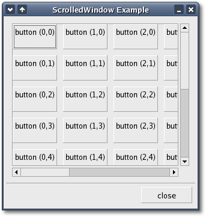

The 'hadjustment' argument is the
adjustment for the
horizontal direction, and the 'vadjustment' argument the
adjustment for the vertical direction. Unless you specifically need to
create your own Adjustments you should use the first constructor which
forces the scrolled window to create it's own Adjustments.
You can set and get the adjustments after the scrolled window has been
created using the following four methods:
void
set_hadjustment(Gtk::Adjustment *hadjustment);
void
set_vadjustment(Gtk::Adjustment
*vadjustment);
Gtk::Adjustment* get_hadjustment() const;
Gtk::Adjustment* get_vadjustment() const;
void
set_policy(Gtk::PolicyType hscrollbar_policy, Gtk::PolicyType
vscrollbar_policy);
The first argument sets the policy for the horizontal scrollbar, and
the second the policy for the vertical scrollbar. The policy may be one
of values from the Gtk::PolicyType enum:
- GTK_POLICY_AUTOMATIC - automatically decide whether you
need the
scrollbar.
- GTK_POLICY_ALWAYS - always leave the scrollbar there.
- GTK_POLICY_NEVER - the scrollbar is never present.
You place your widget into the scrolled window using the following
method:
void
add_with_viewport(Gtk::Widget& child);
ScrolledWindow Example
Here is a simple example that packs a table with 100 toggle buttons
into a scrolled window. I've only commented the parts of source code
that may be
new
to you.
The header file for the ScrolledWindow example
<scrolledwindow.hh>:
#include <xfc/main.hh>
#include <xfc/gtk/dialog.hh>
using namespace Xfc;
class ScrolledWindow : public Gtk::Dialog
{
public:
ScrolledWindow();
virtual
~ScrolledWindow();
};
and the source file is scrolledwindow.cc:
#include "scrolledwindow.hh"
#include <xfc/gtk/buttonbox.hh>
#include <xfc/gtk/scrolledwindow.hh>
#include <xfc/gtk/table.hh>
#include <xfc/gtk/togglebutton.hh>
ScrolledWindow::ScrolledWindow()
{
set_title("ScrolledWindow example");
set_border_width(0);
set_size_request(300, 300);
// Create a new
scrolled
window.
Gtk::ScrolledWindow
*scrolled_window = new
Gtk::ScrolledWindow;
scrolled_window->set_border_width(10);
// The policy is
one of
Gtk::POLICY AUTOMATIC, or Gtk::POLICY_ALWAYS. Gtk::POLICY_AUTOMATIC
will
// automatically decide whether you need scrollbars,
whereas Gtk::POLICY_ALWAYS will always leave
// the scrollbars there. The first one is the
horizontal scrollbar, the second, the vertical.
scrolled_window->set_policy(Gtk::POLICY_AUTOMATIC,
Gtk::POLICY_ALWAYS);
// The dialog
window is
created with a vbox (client_area) packed into it.
client_area()->pack_start(*scrolled_window);
scrolled_window->show();
// Create a table
of 10
by 10 squares.
Gtk::Table *table = new Gtk::Table(10, 10);
// Set the spacing
to 10
on x and 10 on y
table->set_row_spacings(10);
table->set_col_spacings(10);
// Pack the table into the
scrolled window
scrolled_window->add_with_viewport(*table);
table->show();
// This simply
creates a
grid of toggle buttons on the table to demonstrate the scrolled window.
for
(int i = 0; i < 10; i++)
{
for
(int j = 0; j < 10; j++)
{
String text = String::format("button (%d,%d)\n", i, j);
Gtk::ToggleButton *button = new
Gtk::ToggleButton(text);
table->attach(*button, i, i + 1, j, j + 1);
button->show();
}
}
// Add a "close"
button
to the bottom of the dialog
Gtk::Button *button = new Gtk::Button("close");
button->signal_clicked().connect(sigc::mem_fun(this,
&ScrolledWindow::dispose));
// This makes it
so the
button is the default.
button->set_flags(Gtk::CAN_DEFAULT);
action_area()->pack_start(*button);
// This grabs this
button to be the default button. Simply hitting the "Enter" key will
activate this button.
button->grab_default();
button->show();
}
ScrolledWindow::~ScrolledWindow()
{
}
int main (int
argc, char *argv[])
{
using namespace Main;
init(&argc, &argv);
ScrolledWindow window;
window.signal_destroy().connect(sigc::ptr_fun(&Xfc::Main::quit));
window.show();
run();
return 0;
}
Compiling ScrolledWindow
If you compiled and installed XFC yourself, you will find the source
code for ScrolledWindow in the
<examples/howto/scrolledwindow> source directory along with a Makefile.
If
XFC came pre-installed, or you installed it from an RPM package, you
will
find the source code in the
</usr/share/doc/xfcui-X.X/examples/howto/scrolledwindow> subdirectory.
In
this case you will have to create the Makefile yourself (replace X.X
with the
version number of the libXFCui library you have installed).
To create a Makefile for ScrolledWindow, add the following lines to a
new
text
file
and save it using the name "Makefile":
CC = g++
CFLAGS = -Wall -O2
scrolledwindow: scrolledwindow.cc scrolledwindow.hh
$(CC) scrolledwindow.cc -o scrolledwindow $(CFLAGS)
`pkg-config xfcui-X.X --cflags --libs`
clean:
rm -f *.o scrolledwindow
If you cut and paste these lines make sure the whitespace before $(CC)
and rm is a tab character. When
you
compile and run this program you will see the following window appear:
